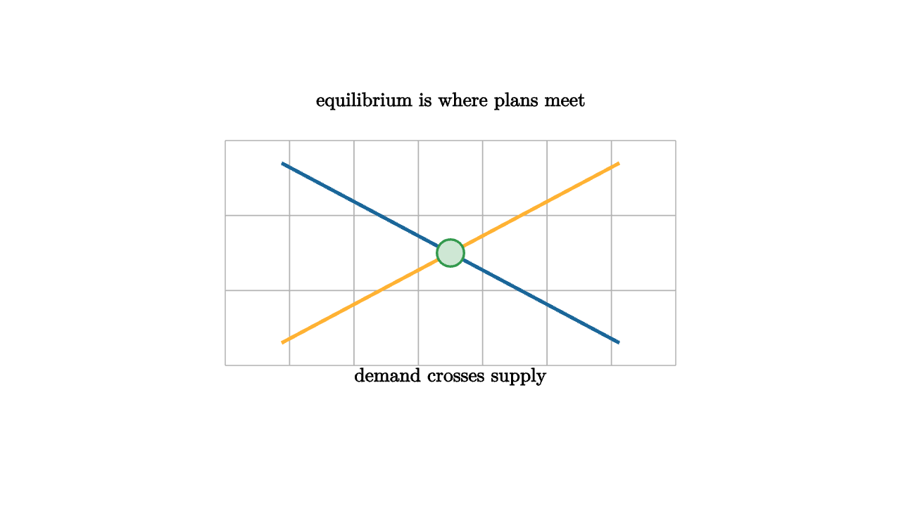

An equilibrium price is not magic. It is a meeting point between two plans. Buyers have a demand plan: at each price, how much would they like to buy? Sellers have a supply plan: at each price, how much would they like to sell? When the quantities match, the market has no simple pressure to move price up or down.
Think of a weekend farmers market. At a high price for strawberries, shoppers buy fewer baskets and farmers bring plenty. Unsold baskets create pressure to lower the price. At a low price, shoppers want more baskets than farmers brought, and the shortage creates pressure upward. Equilibrium is the price where those plans fit together for that day.

source
let soft = |col, amount| lerp(WHITE, col, amount)
mesh market = [
center{1.35u} Text("equilibrium is where plans meet", 0.62),
stroke{LIGHT_GRAY, 1} LineGrid([-2, 2, 8], [-1, 1, 4], 1),
stroke{BLUE, 3} Line(1.5l + 0.8u, 1.5r + 0.8d),
stroke{ORANGE, 3} Line(1.5l + 0.8d, 1.5r + 0.8u),
center{0r} fill{soft(GREEN, 0.24)} stroke{GREEN, 2} Circle(0.12),
center{1.1d} Text("demand crosses supply", 0.62)
]The graph is a compact language for coordination. Above equilibrium, sellers want to sell more than buyers want to buy. Inventories pile up, and price pressure tends downward. Below equilibrium, buyers want more than sellers offer. Shortages appear, and price pressure tends upward. The intersection is the point where these simple pressures cancel.
In algebra, a simple linear model might say
Solving $Q_d(P)=Q_s(P)$ gives the equilibrium price. The graph and the equation are the same story in two languages: one visual, one symbolic.
Comparative statics asks what happens when one plan changes. If a storm reduces supply, the supply curve shifts left and the equilibrium price rises. If a new substitute reduces demand, the demand curve shifts left and the equilibrium price falls. This is not a full movie of adjustment. It is a before-and-after comparison.
That before-and-after comparison is useful because it separates movement along a curve from a shift of the curve. A higher price usually moves buyers along the same demand plan. A change in income, taste, technology, weather, or the price of substitutes changes the plan itself. Students often mix those up because both can change the quantity traded.
source
let soft = |col, amount| lerp(WHITE, col, amount)
"Initial"
mesh curves = [
center{1.25u} Text("initial market", 0.62),
stroke{BLUE, 3} Line(1.4l + 0.75u, 1.4r + 0.75d),
stroke{ORANGE, 3} Line(1.4l + 0.75d, 1.4r + 0.75u),
center{0r} fill{soft(GREEN, 0.24)} stroke{GREEN, 2} Circle(0.12)
]
play Write(0.8)
"Supply Shock"
curves = [
center{1.25u} Text("lower supply raises price", 0.62),
stroke{BLUE, 3} Line(1.4l + 0.75u, 1.4r + 0.75d),
stroke{ORANGE, 3} Line(0.95l + 0.75d, 1.85r + 0.75u),
center{0.35l + 0.18u} fill{soft(GREEN, 0.24)} stroke{GREEN, 2} Circle(0.12)
]
play Trans(1.0)
"Interpret"
curves = [
center{1.25u} Text("the graph compares plans, not every trade", 0.62),
center{0r} Tex("Q_d(P) = Q_s(P)", 0.72),
center{1.0d} Text("solve the meeting point", 0.62)
]
play Trans(0.8)Equilibrium thinking is useful when plans adjust through prices and participants can respond. It is weaker when prices are fixed, information is poor, power is unequal, or goods are rationed by rules rather than willingness to pay. The graph should be taught as a model of pressures, not as a claim that markets are always fair or instant.
Price controls illustrate the limitation. A rent ceiling below equilibrium can create excess demand: more people want apartments than landlords offer at that price. The model predicts a shortage, then the real world adds waiting lists, quality changes, side payments, and rules about who gets priority. The intersection is a beginning of analysis, not the entire social question.
The lesson to keep: equilibrium is a meeting of plans. The math is valuable because it makes the pressure visible, and the interpretation is valuable because it asks which pressures the model has left out.